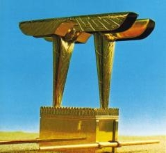
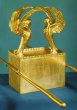
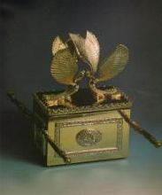

13. MISZKAN - Miejsce Najświętsze
Miejsce Najświętsze było miejscem szczególnym w całym Przybytku. Można by rzec, że cała reszta, to tylko dodatek, umożliwiający sprawowanie świętej służby wokół niego. To właśnie ono stanowiło najważniejszą część tej budowli i sens jej istnienia. Miejsce zastrzeżone wyłącznie dla Boga, gdzie miała przebywać chwała Władcy wszechświata (Kapł. 40:34-37), napawało wielką bojaźnią (Kapł. 9:23-24, Ps. 68:36). Zgodnie z nakazem Wszechmocnego, nikt nie miał prawa wejść poza zasłonę oddzielającą owe miejsce od Miejsca Świętego. Jedynie arcykapłan miał się stawić tam jedyny raz w roku, podczas Święta Yom Kippur, wnosząc krew przebłagania za lud – nie bez trwogi, gdyż najmniejsze uchybienie mogło spowodować jego śmierć (Kapł. 16:2-4, 15-19).
Obecność w tym Najświętszym miejscu musiała wywierać na arcykapłanie niesamowite wrażenie. Był jedynym człowiekiem, który mógł wkroczyć w tą niedostępną przestrzeń. Wchodząc poza zasłonę (zwaną drugą zasłoną - por. Hebr. 9:3), zawieszoną na czterech słupach pokrytych złotem, znajdował się w bezpośredniej obecności Boga; tam spoczywała chwała Boża – Szekina. Przepięknie haftowane zasłony w kolorach niebieskim, fioletowym i szkarłatnym z postaciami cherubinów, odbijały swą paletę barw na gładkich i lśniących złotych ścianach. Ponadto woń kadzidła - jedynego w swoim rodzaju [1], którego dym unosił się nad wiekiem Arki Przymierza zasłaniając je, aby kapłan nie zginął (Kapł. 16:12-13), czyniła tę chwilę obecności przed obliczem Boga wydarzeniem mistycznym i pełnym lęku. Dopiero rozumiejąc niesamowitą świętość tego miejsca oraz rolę jaką stanowiła owa zasłona, będąca niejako barierą oddzielającą człowieka od Boga, pojmiemy znaczenie rozdarcia się tej zasłony w chwili śmierci Zbawiciela świata (Marka 15:37-38).
W Miejscu Najświętszym znajdowała się tylko Arka Przymierza – znak Przymierza pomiędzy Bogiem a Izraelem.
SKRZYNIA (ARKA) PRZYMIERZA (hebr. אָרוֹן הָבְרִית Aron HaBrit)
(2 Mojż. 25:10-22, 3 Mojż. 37:1-9)
Skrzynia Przymierza
Skrzynia Przymierza, o wymiarach 2,5×1,5 łokcia i wysoka na 1,5 łokcia, wykonana była z drzewa akacjowego i pokryta szczerym złotem od wewnątrz i od zewnątrz. Dookoła była przyozdobiona złotym wieńcem. Natomiast po bokach zaopatrzona w cztery złote pierścienie na czterech krawędziach, aby włożone do nich pozłacane akacjowe drążki, ułatwiały transport Skrzyni.
Jako przykrycie Skrzyni wykonano wieko, całe ze szczerego złota, na którego dwóch krawędziach osadzone zostały, wykonane również ze złota, cheruby z rozpostartymi do góry skrzydłami i zwróconym do siebie twarzami.
Wieko Skrzyni Przymierza
Właśnie nad wiekiem Skrzyni Przymierza było miejsce obecności chwały Boga: „siedzącego na tronie między cherubami” (1 Sam. 4:4, BW, por. Kapł. 16:2, Ps. 80:1).
Jako, że Arka Przymierza zaginęła w tajemniczych okolicznościach w roku 586 p.n.e., od czasu zburzenia Świątyni w Jeruzalem, jej los nie jest znany. Jej wygląd można odtworzyć jedynie na podstawie zachowanych opisów biblijnych.

Przykłady różnych wyobrażeń Arki Przymierza
Skrzynia początkowo znajdowała się w Miejscu Najświętszym Miszkanu (Wyjścia 26:33), przeniesiona następnie, po wybudowaniu przez Salomona, do Świątyni w Jeruzalem 2 Kronik 5:1-7).
Wewnątrz Arki złożono 2 kamienne tablice Przymierza, które Mojżesz otrzymał od Boga na górze Synaj (Powt. Pr. 10:2), złote naczynie z manną (Wyjścia 16:33-34), a także (po buncie Koracha) laskę Aarona (Hebr. 9:3-4). Wszystkie te przedmioty miały być świadectwem dla przyszłych pokoleń, dlatego też Arka Przymierza jest nazywana również Skrzynią Świadectwa.
Tablice Przymierza, naczynie z manną i laska Aarona wewnątrz Skrzyni Świadectwa
Naczynie z manną oraz kwitnąca laska Aarona w Skrzyni Przymierza
Arka Przymierza była najświętszym i najważniejszym sprzętem w całym Przybytku. Noszona przez kapłanów na czele ludu (Liczb 10:33-36), zapewniała im przewodnictwo, ochronę (Jozuego 3:11-17, 4:11) i zwycięstwo (Jozuego 6:6-16, 1 Sam. 4:3) – będąc znakiem obecności Boga pomiędzy nimi (1 Sam. 4:5-8). Jej utrata to żal i rozpacz (1 Sam. 4:22), a jej powrót to przyczyna nieopisanej radości (2 Sam. 6:13-15, 1 Sam. 4:5).
Znajdując się w niewłaściwym miejscu stawała się przyczyną plag wobec niegodnych jej obecności ludzi (1 Sam. 5:6-12), a w przeciwnym wypadku – przedmiotem błogosławieństwa (2 Sam. 6:11).
Dotykana przez niepowołane do tego osoby potrafiła uśmiercać (2 Sam. 6:6-7, 1 Sam. 6:19).
Interesująca jest wzmianka w Księdze Objawienia 11:19, która wspomina o Arce Przymierza znajdującej się w niebiańskiej Świątyni.
Kult świątynny przed majestatem Najwyższego Boga nie mógł być sprawowany przez przypadkowych ludzi, w przypadkowych szatach. To zagadnienie omawia kolejny rozdział.
---
[1] niepowtarzalny sklad kadzidla do sluzby świątynnej omowiono w rozdziale "Miszkan - Miejsce Święte".
Zdjęcia użyte w opracowaniu wykorzystano za uprzejmą zgodą: MISHKAN MINISTRIES - http://www.mishkanministries.org/home.php
Książka

Zasłony i wieko
Wiemy, jak wyglądała Świątynia-Namiot Zgromadzenia, którą zbudował Mojżesz na polecenie Boga. Wiemy, jak w tej Świątyni wyglądała zasłona u wejścia do Przybytku i wiemy, jak wyglądała druga zasłona, która oddzielała MIEJSCE NAJŚWIĘTSZE od Miejsca Świętego.
Bóg rozmawiał z Mojżeszem i TYLKO z Mojżeszem twarzą w twarz, a rozmawiał z nim sponad wieka, umieszczonego na Skrzyni Przymierza, dopiero po wniesieniu Skrzyni do Miejsca Najświętszego – Księga Wyjścia 26, 34.
Po tym, jak zginęli dwaj synowie Aarona w chwili, gdy ofiarowali przed Panem inny ogień, którego im nie nakazał, Bóg określił dokładnie, jak powinien postępować Aaron, korzystający z Jego przyzwolenia na wejście do Miejsca Najświętszego, aby nie zginąć podobnie. Mówi o tym Księga Kapłańska, rozdział 16, wersety: 3 – 14.
Czy jest możliwe, aby to święte wieko było kiedykolwiek wynoszone z Miejsca Najświętszego po uświęceniu Namiotu Zgromadzenia przez samego Boga – 40: 34 i 35? Biblia nie mówi, co się stało z wiekiem, gdy Mojżesz umarł – czy jest możliwe, że ono nie utraciło wtedy swej świętości, skoro nikt więcej nie miał już nigdy oglądać Oblicza Boga tak, jak oglądał Je Mojżesz?
W Świątyni Salomona, zamiast wieka, nad Skrzynią Przymierza Salomon kazał wyrzeźbić cheruby z drzewa oliwkowego i pokryć je złotem – Pierwsza Królewska rozdział 6: 23 - 28 oraz 8: 6 i 7; natomiast Miejsce Najświętsze było w tej Świątyni oddzielone od Miejsca Świętego specjalnie skonstruowanymi drzwiami wahadłowymi – rozdział 6: 31 – 34; z tego wynika, że w tym Przybytku nie było żadnej zasłony.
Na temat Drugiej Świątyni Biblia nie mówi nic – Księga Ezdrasza 6, 15: „I dokończona została ta świątynia trzeciego dnia miesiąca Adar, w szóstym roku panowania króla Dariusza.” - i to jest wszystko, co na temat tej Świątyni NAPISANO.
Skąd i co wiadomo na temat tej Świątyni oraz zasłon, dzielących jej wnętrze – czy były to zasłony, czy podobnie jak w Świątyni Salomona – tylko drzwi, wiadomo, czy nie wiadomo?
Księga Ezechiela Skrzyni Przymierza w ogóle nie wspomina, a Jeremiasza 3, 16 mówi: „... już nie będą mówić o Skrzyni Przymierza z Panem i nikt o niej nie będzie myślał, i nikt jej nie będzie wspominał, nikt nie będzie odczuwał jej braku, ani też nie będą sporządzać nowej.”
skrzynia przymierza
odp. na pierwszy post
Stary Testament pozwala nam lepiej zrozumieć Nowy Testament i na odwrót. W liście do Hebrajczyków czytamy że w Skrzyni Świadectwa były: kamienne tablice, laska Aarona i dzban z manną. Przekaz z Starego Testamentu to potwierdza :) (zaraz ci to wykażę). Pytałeś kto miał prawo dotykać Skrzyni Świadectwa, odpowiedź jest prosta - Mojżesz, Aaron i jego synowie(O Aaronie i jego synach czytamy w 4 Księdze Mojżeszowej kiedy Bóg mówi o przenoszeniu przybytku),oraz Lewici. Kolejne pytanie czy po zamknięciu przez Mojżesza Skrzyni Świadectwa otwierał ją ktokolwiek, tak Mojżesz(chowając laskę Aarona) i Aaron(chowając dzban z manną) na polecenie Boga przekazane przez Mojżesza.
"IV Księga Mojżeszowa 17: 27 i 28: „Wtedy SYNOWIE IZRAELSCY rzekli do Mojżesza: Oto konamy! Giniemy! Wszyscy giniemy! Ginie każdy, kto ZBLIŻA SIĘ do przybytku Pańskiego. Czy mamy doszczętnie zginąć?”" Użyłeś tego fragmentu wyjmując go całkowicie z kontekstu, nie ma on żadnego powiązanie z dotykaniem Skrzyni Świadectwa. Z powodu buntu Koracha umarło wiele osób, lud szemrał przeciw Mojżeszowi i Aaronowi, i z tego powodu Pan zapłonął gniewem i wytracił by cały lud gdyby Aaron nie dokonał przebłagania.
Jak już wspomniałem zakwitłą laskę Aarona do Skrzyni Świadectwa schował Mojżesz, a Aaron schował dzban z manną.
"Biblia Warszawska mówi inaczej; (IV M. 17: 16 – 26): „I przemówił Pan do Mojżesza tymi słowy:... (19) Połóż je potem w Namiocie Zgromadzenia PRZED Skrzynią Świadectwa, gdzie się wam objawiam.... (25) Odnieś z powrotem laskę Aarona PRZED Skrzynię Świadectwa,... (26) Mojżesz postąpił tak, jak mu nakazał Pan, tak postąpił.” Z dzbanem manny rzecz miała się dokładnie tak samo (II M. 16: 33 i 34): „I rzekł Mojżesz do Aarona: Weź jeden dzban i włóż do niego pełny omer manny, i postaw go PRZED Panem... (34) Tak jak nakazał Pan Mojżeszowi, Aaron postawił go PRZED Świadectwem na przechowanie.”"
Żeby lepiej zrozumieć i zagłębić się w tekst warto posłużyć się różnymi tłumaczeniami lub, jak masz możliwość, przekładem interlinearnym. W tym wypadku tekst oryginalny pokazuje użyte przez ciebie fragmenty w innym troszkę świetle. Mianowicie w wersecie 19, Pan każe przynieść laski do Namiotu Świadectwa i położyć je przed Sobą(można tłumaczyć przed Skrzynią Świadectwa gdyż Pan był ponad Skrzynia Świadectwa). Natomiast w wersecie 25 Pan mówi do Mojżesza że ma przynieść laskę Aarona ponownie i położyć przed Świadectwem. II M.16:34 Aaron postawił dzban z manną przed Świadectwem. Słowo "Świadectwo" w oby dwóch przypadkach jest tym samym słowem co w II M. 25:21 i odnosi się do kamiennych tablic z zapisanym prawem. Świadectwo było w skrzyni, więc położenie czegoś przed Świadectwem oznacza że musisz włożyć to do skrzyni, nie przed Skrzynie
Świadectwa.
Temat Trójcy jest zbyt długi by go tutaj wyłuszczać.
Co się stało z Skrzynią Świadectwa tego nie wiadomo, na pewno nie spłonęła bo jak wiesz była pokryta złotem które topi się dopiero powyżej 1000 stopni Celsjusza(płonąca świątynia nie osiągnęła by takiej temperatury). Zanim świątynie spalono to ją ograbiono i czytamy co z niej zabrano i nie ma tam wzmianki o Skrzyni Świadectwa, więc nie mamy podstaw uważać że stała się łupem. Pozostajemy więc tylko z tą wiedzą że zniknęła i można tylko snuć domniemania co się z nią stało.
odp. na drugi post
"Pierwsza Księga Królewska 8, 9: „W Skrzyni nie było nic oprócz dwóch kamiennych tablic, które tam złożył Mojżesz pod Chorebem, gdzie Pan zawarł przymierze z synami izraelskimi po ich wyjściu z ziemi egipskiej.”.
Treść tego wersetu jest zgodna z treścią wersetów z Drugiej i Czwartej Księgi Mojżeszowej oraz ze świętością Skrzyni Przymierza, której nawet Aaron nie miał prawa nie tylko dotykać, ale w ogóle zbliżać się do niej bez potrzeby, pod groźbą poniesienia śmierci.
Kto był w stanie uczynić przy Skrzyni cokolwiek więcej ponadto, co NAKAZAŁ PAN?"
Sam sobie zaprzeczasz. Wiedząc że w Skrzyni Świadectwa, nie było żadnych szpar, okienek ani nic w tym stylu, to jedynym sposobem żeby się dowiedzieć co jest w środku, to odsunięcie wieka i zajrzenie do środka. Skąd ludzie wiedzieli że tam są tylko kamienne tablice??Dlaczego autor pisze że w Skrzyni nie było nic oprócz... tak jakby sam spodziewał się że jest tam coś jeszcze?
Kto był w stanie uczynić przy Skrzyni cokolwiek,hmm... w I Samuela 5,6 rozdział czytamy o tym że Skrzynia dostała się w ręce Filistyńczyków, w 6:19 czytamy że Pan zabił ponad 50 tyś ludzi za to że zaglądali do Skrzyni. I to właśnie ci ludzie zabrali ze Skrzyni laskę Aarona i dzban z manną.
"Druga Samuela 6, 6 i 7: „A gdy dotarli do klepiska Nachona, Uzza wyciągnął swoją rękę ku Skrzyni Bożej i chciał ją podtrzymać, gdyż woły się potknęły. I rozpalił się gniew Pana na Uzzę, i zabił go tam Bóg za to, że wyciągnął swoją rękę ku Skrzyni, i umarł tam przy Skrzyni Bożej.”
Po tym zdarzeniu, kto by wyciągnął rękę w stronę Skrzyni, aby zdjąć jej wieko?"
I Kronik 13:5-14 opisuje te same wydarzenia(z tym wyjątkiem, że napisano, że woły mało nie przewróciły Skrzyni,jak wiemy wieko nie było przytwierdzone do Skrzyni, może w tym momencie wieko się przesunęło i zobaczono co jest w środku?) po których sam Dawid bał się sprowadzić Skrzynie do Jeruzalem,lecz w 15 rozdziale tej samej księgi widzimy jak Dawid zdaje sobie sprawę z błędu który popełnił, bo nikomu, jak tylko Lewitom nie wolno nosić Skrzyni Pańskiej. Uzza nie był Lewitą, dlatego poniósł śmierć.
Pytasz o źródło prawdy?Słusznie, Jezus jest Prawdą i jeżeli się nie nawrócisz to wiele rzeczy będzie przed tobą zasłonięte, będziesz duchowo ślepy. No ale to inny temat i nie na taki rodzaj konwersacji. Pozdrawiam
P.S po 585 r p.n.e w drugiej świątyni w miejscu najświętszym nie było nic.
P.S 2 możesz poddawać w wątpliwość treść czy autora Listu do Hebrajczyków czy jakiejkolwiek innej księgi kanonicznej i chyba nikt nie będzie cię przekonywał do niczego bo to mija się z celem, biblia jest słowem natchnionym, do zrozumienia i przyjęcia jej potrzebna jest wiara.
PRAWDA a prawda
Księga Wyjścia 25, 10 i 11: „Zrobią też skrzynię z drzewa akacjowego, dwa i pół łokcia długą, półtora łokcia szeroką i półtora łokcia wysoką. Pokryjesz ją szczerym złotem. Pokryjesz ją wewnątrz i z zewnątrz. Zrobisz na niej dokoła złoty wieniec.”
Czy skrzynia z drzewa akacjowego, jedynie pokryta złotem, mogła się spalić?
Księga Wyjścia 25, 17 i 18: „I zrobisz wieko ze szczerego złota dwa i pół łokcia długie, a półtora łokcia szerokie. Zrobisz też dwa cheruby z litego złota, zrobisz je na obu krawędziach wieka.”
Nie ma tu mowy o grubości wieka, ale musiało ono być wystarczająco sztywne, aby wraz z cherubami zachować potrzebny kształt. Ile taka całość mogła ważyć? Czy jakakolwiek jedna osoba byłaby w stanie podnieść takie wieko i jeszcze do tego nie naruszyć jego stabilności? Wieniec złoty na skrzyni zapewne zabezpieczał także wieko przed przesunięciem. Jeżeli do tego dodamy, że wieka nie mogła dotykać żadna osoba przypadkowa, to wychodzi, że wszelkich manewrów z wiekiem, gdy skrzynia znajdowała się w miejscu najświętszym, mógł dokonywać tylko sam Aaron. Trochę inaczej sprawa wygląda w przypadku przenoszenia skrzyni do nowej Świątyni Salomona; wtedy, na pewno, było wyznaczonych więcej osób do takiego transportu i to, prawdopodobnie, ze zdjętym wiekiem. Wtedy można było do skrzyni zajrzeć i zobaczyć, co się w niej mieści.
Jezus Chrystus jest JEDYNĄ PRAWDĄ, ale nie ma to żadnego związku z prawdą, określającą konstrukcję skrzyni przymierza i nakrywającego ją wieka. Czy nie dostrzegasz różnicy?
Skrzynia Przymierza
Przedstawiacie Skrzynię Świadectwa, która zawiera: kamienne tablice, dzban z manną i laskę Aarona. Czy to jest możliwe? Kto miał prawo DOTYKAĆ wieka Skrzyni Świadectwa? Czy po jej zamknięciu w czasach Mojżesza otwierał ją KTOKOLWIEK? IV Księga Mojżeszowa 17: 27 i 28: „Wtedy SYNOWIE IZRAELSCY rzekli do Mojżesza: Oto konamy! Giniemy! Wszyscy giniemy! Ginie każdy, kto ZBLIŻA SIĘ do przybytku Pańskiego. Czy mamy doszczętnie zginąć?”
Czy wierzycie, że Aaron WŁASNORĘCZNIE zdjął wieko Skrzyni Przymierza, aby do niej włożyć, najpierw dzban z manną, a potem jeszcze i zakwitłą laskę?
Biblia Warszawska mówi inaczej; (IV M. 17: 16 – 26): „I przemówił Pan do Mojżesza tymi słowy:... (19) Połóż je potem w Namiocie Zgromadzenia PRZED Skrzynią Świadectwa, gdzie się wam objawiam.... (25) Odnieś z powrotem laskę Aarona PRZED Skrzynię Świadectwa,... (26) Mojżesz postąpił tak, jak mu nakazał Pan, tak postąpił.” Z dzbanem manny rzecz miała się dokładnie tak samo (II M. 16: 33 i 34): „I rzekł Mojżesz do Aarona: Weź jeden dzban i włóż do niego pełny omer manny, i postaw go PRZED Panem... (34) Tak jak nakazał Pan Mojżeszowi, Aaron postawił go PRZED Świadectwem na przechowanie.”
Tak kardynalne błędy w sprawach tej wagi, wraz z zastępowaniem świętego imienia IZRAEL nazwą: „Żyd”, w odniesieniu do czasów zanim Żydzi w ogóle zdążyli zaistnieć w historii, poddają w wątpliwość inne informacje, jakie zamieszczacie na swoim portalu, nawet pomijając Waszą zadziwiającą zgodność z ugrupowaniami (zielonoświątkowcy) wierzącymi w „trójcę”, która jest według nich „trój-jedynym” (jakimś) bogiem – co to takiego?
Chyba jednak Waszego zboru Paweł nie nazwałby ani IZRAELEM BOŻYM (Gal. 6:16), ani nawet zborem BOŻYM (I T. 2, 14) . Czy jest Wam to obojętne?
Co było za zasłoną w drugiej świątyni, gdzie powinno być miejsce najświętsze z powodu Najświętszego Świadectwa, które POWINNO tam być umieszczone?
Skrzynia Przymierza zaginęła, czy spłonęła wraz z Przybytkiem, spalonym przez Nebuzaradana – Jeremiasza 52: 12 i 13?
Wersety naprowadzajace:
Wersety naprowadzajace:
"Na wierzchu skrzyni położysz wieko, w skrzyni zaś złożysz Świadectwo, które ci dam" (Wyjscia 25:21).
"Był to namiot, w którego pierwszej części zwanej /Miejscem/ Świętym, znajdował się świecznik, stół i chleby pokładne. Za drugą zaś zasłoną był przybytek, który nosił nazwę "Święte Świętych". Posiadało ono złoty ołtarz kadzenia i Arkę Przymierza, pokrytą zewsząd złotem. Znajdowało się w niej naczynie złote z manną, laska Aarona, która zakwitła, i tablice Przymierza" (Hebr. 9:2-4, BT).
Pozdrawiam.
Za zasłoną i przed zasłoną
Księga Wyjścia 40,21: "I wniósł Skrzynię do przybytku, i zawiesił kotarę zasłaniającą, i zakrył Skrzynię Świadectwa, jak Pan nakazał Mojżeszowi."
40, 26: "I ustawił złoty ołtarz w Namiocie Zgromadzenia przed zasłoną, (27) I spalił na nim wonne kadzidło, jak Pan nakazał Mojżeszowi."
Nie mogło być inaczej, ponieważ TYLKO Mojżesz miał NIEOGRANICZONY DOSTĘP do Miejsca Najświętszego. Aaron mógł wchodzić za DRUGĄ zasłonę TYLKO raz w roku - III Mojżeszowa 16, 2: "I rzekł Pan do Mojżesza: Powiedz Aaronowi, bratu swemu, żeby nie wchodził o każdym czasie do miejsca świętego poza zasłonę (powinno być najświętszego) przed wieko, które jest na Skrzyni, aby nie umarł, gdyż ukażę się nad wiekiem w obłoku."
Tak powinien wchodzić (16,12 i 13): Następnie weźmie pełną kadzielnicę rozżarzonych węgli z ołtarza, który jest przed Panem (przed zasłoną) i pełne garście miałkiego wonnego kadzidła i wniesie poza zasłonę, (13) I nasypie kadzidła na ogień przed Panem, aby obłok z kadzidła okrył wieko, które jest ponad Świadectwem, i aby NIE ZGINĄĆ."
Ten wyjątkowy dzień to był dziesiąty dzień siódmego miesiąca, z odpowiednią ofiarą za "swój własny grzech", o czym mówi werset 16,11 oraz 16,29.
Pozdrawiam
SKRZYNIA PRZYMIERZA w Świątyni Salomona
SKRZYNIA PRZYMIERZA w Świątyni Salomona
Pierwsza Księga Królewska 8, 9: „W Skrzyni nie było nic oprócz dwóch kamiennych tablic, które tam złożył Mojżesz pod Chorebem, gdzie Pan zawarł przymierze z synami izraelskimi po ich wyjściu z ziemi egipskiej.”.
Treść tego wersetu jest zgodna z treścią wersetów z Drugiej i Czwartej Księgi Mojżeszowej oraz ze świętością Skrzyni Przymierza, której nawet Aaron nie miał prawa nie tylko dotykać, ale w ogóle zbliżać się do niej bez potrzeby, pod groźbą poniesienia śmierci.
Kto był w stanie uczynić przy Skrzyni cokolwiek więcej ponadto, co NAKAZAŁ PAN?
Druga Samuela 6, 6 i 7: „A gdy dotarli do klepiska Nachona, Uzza wyciągnął swoją rękę ku Skrzyni Bożej i chciał ją podtrzymać, gdyż woły się potknęły. I rozpalił się gniew Pana na Uzzę, i zabił go tam Bóg za to, że wyciągnął swoją rękę ku Skrzyni, i umarł tam przy Skrzyni Bożej.”
Po tym zdarzeniu, kto by wyciągnął rękę w stronę Skrzyni, aby zdjąć jej wieko?
Pytanie – gdzie jest źródło prawdy: w Torze i Starym Testamencie, czy w liście do Hebrajczyków, co do którego nie ma pewności, że własnoręcznie napisał go Paweł ani, że ten szczegół został dokładnie przetłumaczony?
Co było za zasłoną w Drugiej Świątyni, skoro mówi się, że Skrzynia Przymierza zaginęła w roku 586 p.n.e.? Zaginęła, czy spłonęła?
Przytoczony werset z II M. 25: 21 nie nakazuje Mojżeszowi osobiście wykonać polecenia, bo nie jest możliwe, aby wykonał on osobiście wszystko to, co Bóg kieruje do niego osobiście w innych wersetach, np 11, 12, 17, 18, 19, a pewnie w wielu innych.
skrzynia przymierza
odp. na pierwszy post
Stary Testament pozwala nam lepiej zrozumieć Nowy Testament i na odwrót. W liście do Hebrajczyków czytamy że w Skrzyni Świadectwa były: kamienne tablice, laska Aarona i dzban z manną. Przekaz z Starego Testamentu to potwierdza :) (zaraz ci to wykażę). Pytałeś kto miał prawo dotykać Skrzyni Świadectwa, odpowiedź jest prosta - Mojżesz, Aaron i jego synowie(O Aaronie i jego synach czytamy w 4 Księdze Mojżeszowej kiedy Bóg mówi o przenoszeniu przybytku),oraz Lewici. Kolejne pytanie czy po zamknięciu przez Mojżesza Skrzyni Świadectwa otwierał ją ktokolwiek, tak Mojżesz(chowając laskę Aarona) i Aaron(chowając dzban z manną) na polecenie Boga przekazane przez Mojżesza.
"IV Księga Mojżeszowa 17: 27 i 28: „Wtedy SYNOWIE IZRAELSCY rzekli do Mojżesza: Oto konamy! Giniemy! Wszyscy giniemy! Ginie każdy, kto ZBLIŻA SIĘ do przybytku Pańskiego. Czy mamy doszczętnie zginąć?”" Użyłeś tego fragmentu wyjmując go całkowicie z kontekstu, nie ma on żadnego powiązanie z dotykaniem Skrzyni Świadectwa. Z powodu buntu Koracha umarło wiele osób, lud szemrał przeciw Mojżeszowi i Aaronowi, i z tego powodu Pan zapłonął gniewem i wytracił by cały lud gdyby Aaron nie dokonał przebłagania.
Jak już wspomniałem zakwitłą laskę Aarona do Skrzyni Świadectwa schował Mojżesz, a Aaron schował dzban z manną.
"Biblia Warszawska mówi inaczej; (IV M. 17: 16 – 26): „I przemówił Pan do Mojżesza tymi słowy:... (19) Połóż je potem w Namiocie Zgromadzenia PRZED Skrzynią Świadectwa, gdzie się wam objawiam.... (25) Odnieś z powrotem laskę Aarona PRZED Skrzynię Świadectwa,... (26) Mojżesz postąpił tak, jak mu nakazał Pan, tak postąpił.” Z dzbanem manny rzecz miała się dokładnie tak samo (II M. 16: 33 i 34): „I rzekł Mojżesz do Aarona: Weź jeden dzban i włóż do niego pełny omer manny, i postaw go PRZED Panem... (34) Tak jak nakazał Pan Mojżeszowi, Aaron postawił go PRZED Świadectwem na przechowanie.”"
Żeby lepiej zrozumieć i zagłębić się w tekst warto posłużyć się różnymi tłumaczeniami lub, jak masz możliwość, przekładem interlinearnym. W tym wypadku tekst oryginalny pokazuje użyte przez ciebie fragmenty w innym troszkę świetle. Mianowicie w wersecie 19, Pan każe przynieść laski do Namiotu Świadectwa i położyć je przed Sobą(można tłumaczyć przed Skrzynią Świadectwa gdyż Pan był ponad Skrzynia Świadectwa). Natomiast w wersecie 25 Pan mówi do Mojżesza że ma przynieść laskę Aarona ponownie i położyć przed Świadectwem. II M.16:34 Aaron postawił dzban z manną przed Świadectwem. Słowo "Świadectwo" w oby dwóch przypadkach jest tym samym słowem co w II M. 25:21 i odnosi się do kamiennych tablic z zapisanym prawem. Świadectwo było w skrzyni, więc położenie czegoś przed Świadectwem oznacza że musisz włożyć to do skrzyni, nie przed Skrzynie
Świadectwa.
Temat Trójcy jest zbyt długi by go tutaj wyłuszczać.
Co się stało z Skrzynią Świadectwa tego nie wiadomo, na pewno nie spłonęła bo jak wiesz była pokryta złotem które topi się dopiero powyżej 1000 stopni Celsjusza(płonąca świątynia nie osiągnęła by takiej temperatury). Zanim świątynie spalono to ją ograbiono i czytamy co z niej zabrano i nie ma tam wzmianki o Skrzyni Świadectwa, więc nie mamy podstaw uważać że stała się łupem. Pozostajemy więc tylko z tą wiedzą że zniknęła i można tylko snuć domniemania co się z nią stało.
odp. na drugi post
"Pierwsza Księga Królewska 8, 9: „W Skrzyni nie było nic oprócz dwóch kamiennych tablic, które tam złożył Mojżesz pod Chorebem, gdzie Pan zawarł przymierze z synami izraelskimi po ich wyjściu z ziemi egipskiej.”.
Treść tego wersetu jest zgodna z treścią wersetów z Drugiej i Czwartej Księgi Mojżeszowej oraz ze świętością Skrzyni Przymierza, której nawet Aaron nie miał prawa nie tylko dotykać, ale w ogóle zbliżać się do niej bez potrzeby, pod groźbą poniesienia śmierci.
Kto był w stanie uczynić przy Skrzyni cokolwiek więcej ponadto, co NAKAZAŁ PAN?"
Sam sobie zaprzeczasz. Wiedząc że w Skrzyni Świadectwa, nie było żadnych szpar, okienek ani nic w tym stylu, to jedynym sposobem żeby się dowiedzieć co jest w środku, to odsunięcie wieka i zajrzenie do środka. Skąd ludzie wiedzieli że tam są tylko kamienne tablice??Dlaczego autor pisze że w Skrzyni nie było nic oprócz... tak jakby sam spodziewał się że jest tam coś jeszcze?
Kto był w stanie uczynić przy Skrzyni cokolwiek,hmm... w I Samuela 5,6 rozdział czytamy o tym że Skrzynia dostała się w ręce Filistyńczyków, w 6:19 czytamy że Pan zabił ponad 50 tyś ludzi za to że zaglądali do Skrzyni. I to właśnie ci ludzie zabrali ze Skrzyni laskę Aarona i dzban z manną.
"Druga Samuela 6, 6 i 7: „A gdy dotarli do klepiska Nachona, Uzza wyciągnął swoją rękę ku Skrzyni Bożej i chciał ją podtrzymać, gdyż woły się potknęły. I rozpalił się gniew Pana na Uzzę, i zabił go tam Bóg za to, że wyciągnął swoją rękę ku Skrzyni, i umarł tam przy Skrzyni Bożej.”
Po tym zdarzeniu, kto by wyciągnął rękę w stronę Skrzyni, aby zdjąć jej wieko?"
I Kronik 13:5-14 opisuje te same wydarzenia(z tym wyjątkiem, że napisano, że woły mało nie przewróciły Skrzyni,jak wiemy wieko nie było przytwierdzone do Skrzyni, może w tym momencie wieko się przesunęło i zobaczono co jest w środku?) po których sam Dawid bał się sprowadzić Skrzynie do Jeruzalem,lecz w 15 rozdziale tej samej księgi widzimy jak Dawid zdaje sobie sprawę z błędu który popełnił, bo nikomu, jak tylko Lewitom nie wolno nosić Skrzyni Pańskiej. Uzza nie był Lewitą, dlatego poniósł śmierć.
Pytasz o źródło prawdy?Słusznie, Jezus jest Prawdą i jeżeli się nie nawrócisz to wiele rzeczy będzie przed tobą zasłonięte, będziesz duchowo ślepy. No ale to inny temat i nie na taki rodzaj konwersacji. Pozdrawiam
P.S po 585 r p.n.e w drugiej świątyni w miejscu najświętszym nie było nic.
P.S 2 możesz poddawać w wątpliwość treść czy autora Listu do Hebrajczyków czy jakiejkolwiek innej księgi kanonicznej i chyba nikt nie będzie cię przekonywał do niczego bo to mija się z celem, biblia jest słowem natchnionym, do zrozumienia i przyjęcia jej potrzebna jest wiara.
Czytam jak NAPISANO
Nie zaprzeczam ani sobie, ani temu, co napisano, bo ja CZYTAM NIE "INTERPRETUJĘ", a napisano tak:
Pierwsza Królewska 6, 23: „W miejscu NAJŚWIĘTSZYM kazał wyrzeźbić (oczywiście Salomon) z drzewa akacjowego dwa cheruby wysokie na dziesięć łokci.” oraz 8, 6 i 7: „Kapłani wnieśli Skrzynię Przymierza Pańskiego na jej miejsce do przybytku wewnętrznego świątyni , do miejsca NAJŚWIĘTSZEGO, pod skrzydła cherubów. Cheruby bowiem miały skrzydła rozpostarte nad miejscem dla Skrzyni tak, iż cheruby okrywały Skrzynię i jej drążki z wierzchu.”, a dalej to już 8, 9: „W Skrzyni nie było nic oprócz dwóch kamiennych tablic, które tam złożył Mojżesz pod Chorebem, gdzie Pan zawarł przymierze z synami izraelskimi po ich wyjściu z ziemi egipskiej.”
Czy masz wątpliwości, że kapłani wnosili do Świątyni Salomona odkrytą Skrzynię Przymierza Pańskiego? Przeczytaj cały rozdział 6, 7 i 8, a będą rozwiane twoje wątpliwości.
Jaką funkcję pełniło to niezwykłe wieko w czasach Mojżesza? Jeżeli bardzo chcesz się tego dowiedzieć, to musisz przeczytać Drugą, Trzecią i Czwartą Księgę Mojżesza.